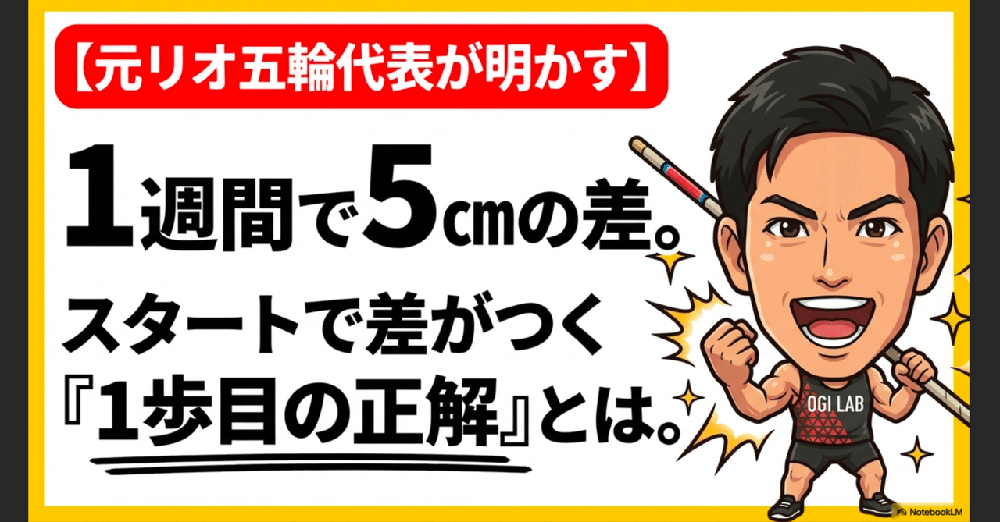
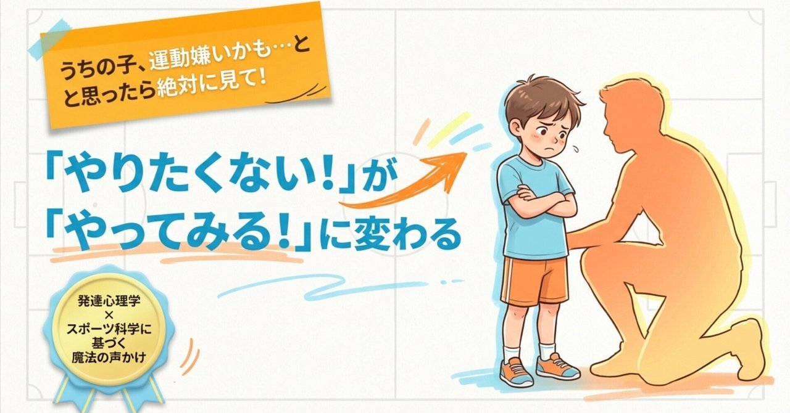
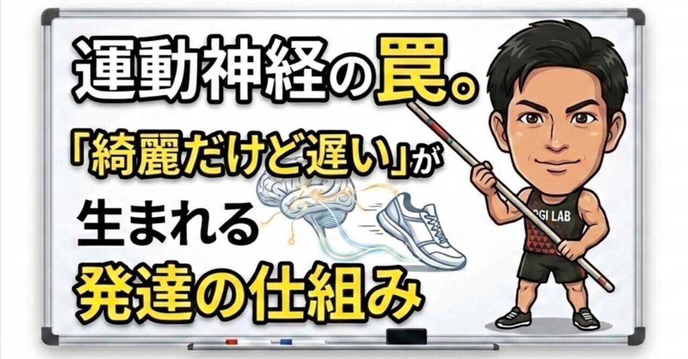
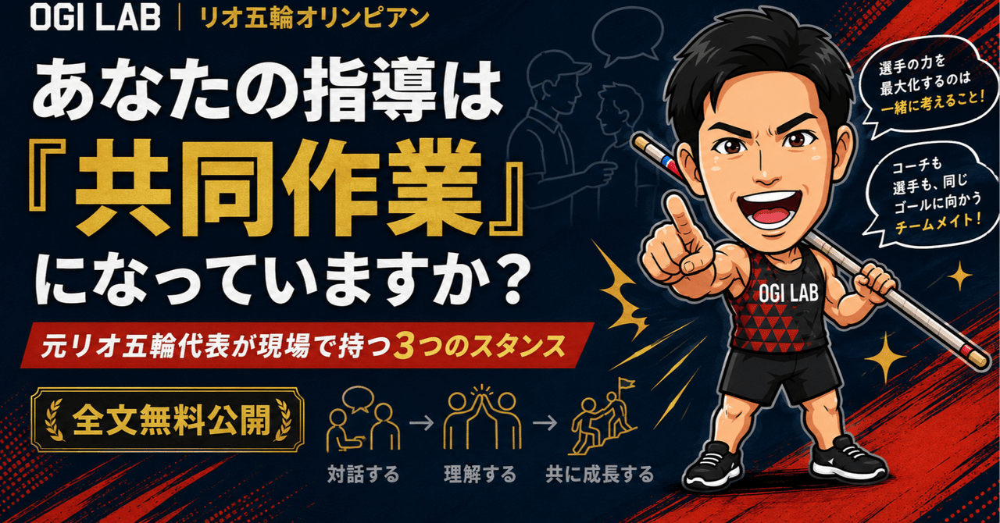
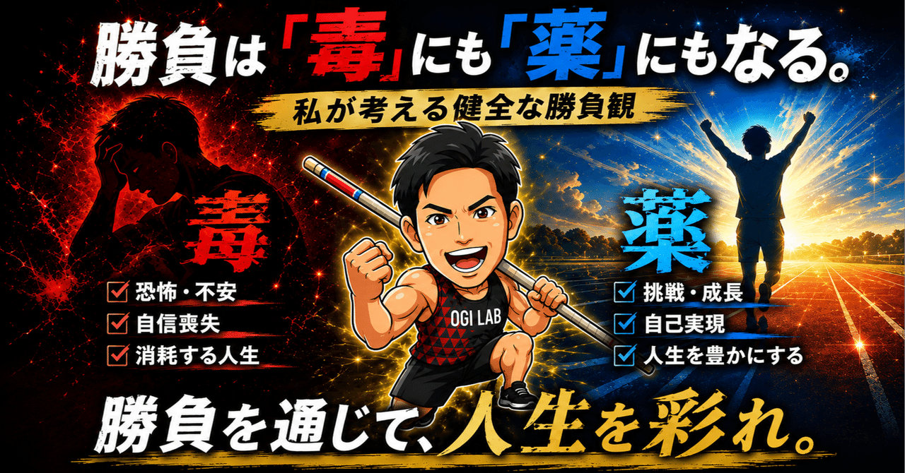

運動会で速く走るコツから、やる気を引き出す声かけ、指導の考え方まで。
おうちでも役立つ「読みもの」を集めました。気になるテーマからどうぞ。

1週間で５cmの差。スタートで差がつく「1歩目の正解」とは！？
運動会の季節に。「もっと足を速く動かして！」が実は逆効果。今日から家でできる3ステップドリルを紹介します。
note記事
読む →

【保存版】「運動したくない！」が「もっとやりたい！」に変わる魔法の声かけ
発達心理学にもとづく、子どものやる気を引き出す声かけとメンタル育成法。すぐ諦めてしまう子への向き合い方を解説します。
note記事
読む →

指導すればするほど、なぜかタイムが落ちる。「綺麗だけど遅い子」が生まれる発達の仕組み
フォームはきれいなのにタイムが伸びない。その原因は才能でも努力不足でもなく「発達段階を無視した関わり方」にありました。
note記事
読む →

あなたの指導は「共同作業」になっていますか？｜コーチングで持つ3つのスタンス
「コーチの言うことは素直に聞く」だけでは伸びない。子ども自身の感覚を活かす指導のスタンスを、現場の視点で語ります。
note記事
読む →

勝負は「毒」にも「薬」にもなる。── 私が考える健全な勝負観
勝ち負けへのこだわりは、子どもの競技人生を「消耗させる」か「豊かにする」か。オリンピアンが考える健全な勝負観について。
note記事
読む →